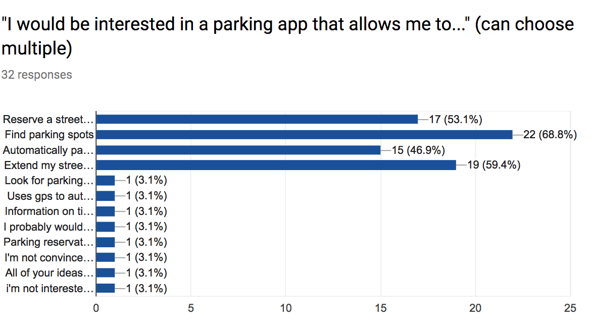
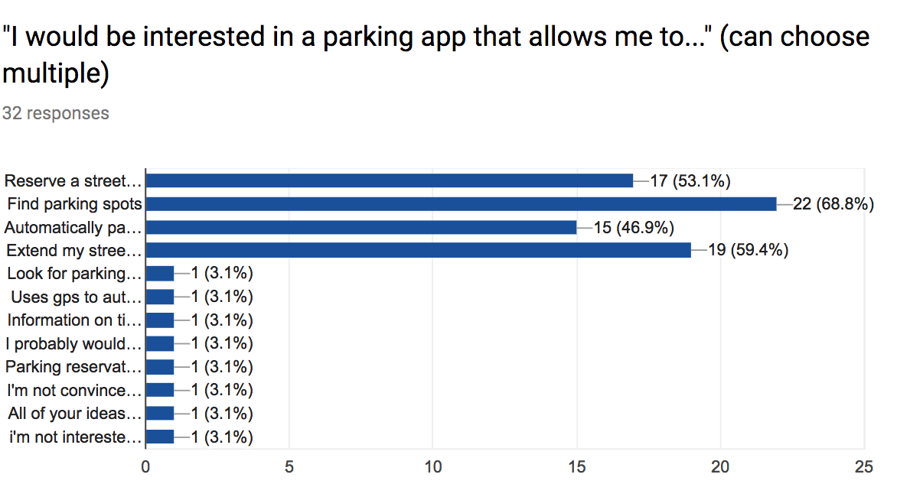

S'park
Parking App Design Sprint, Fall 2017
S'park is for drivers. It allows you to find and book available parking spots near your destination.
"Mayor Jorge O. Elorza revealed a proposed five-year capital improvement plan Tuesday that calls for spending between $16 million and $34 million a year on repairs to sidewalks, sewers, bridges and other infrastructure improvement projects." – John Hill, Providence Journal Jan. 2017
In response to recent developements in the expansion of infrastruture improvements in Providence, I pitched the problem of finding parking to our studio and formed a group with 5 students to develop a solution. This project, from reserach to our first pass prototype, was completed in 2.5 weeks.

Conceptual Models
We looked into existing services with mental models that our app could leverage. To better understand the people we were designing for to narrow our design focus, I drafted a questionaire to send out. We recieved 32 resonses from the survey, and interviewed 15 drivers in person.
 

Interviews & Surveys
We learned that most people have had issues with unpaid and expired meters. People try to avoid paid parking when there is free parking. If paying with card, they tend to pay for the estimated maximum time. Drivers also generally either seldom use street parking or use it very frequently. Yet for drivers, the most important factor when looking for street parking pricing and proximity to their destination.
These results allowed us to frame personas and identify pain points. This includes situations when a driver tries to reserve a spot that is already taken, when they do not know where the paid and free parking spots are, when they cannot tell the difference between paid and free parking, and when they would like to book a parking spot before their arrival to the destination.

Journey Maps
The following journey maps are an aggregate of potential points of friction drivers may experience, allowing us to better understand and keep our users in mind. Both Kim and Ron run into common issues that come up involving parking meters, color zones and finding parking spots.
Persona 1: Kim is willing to pay for parking if the spot is close to work.
Persona 2: Ron would rather park further to avoid paid parking, but would like to be reminded of time zones and restricted areas.


IA & Wireframing
After the research phase, our group came together to re-evaluate our objectives. How will S'park stand out in a saturated transporation market? To meet a unique and targeted customer need, we brought our focus into creating a tool to help people discover parking spaces nearby more quickly.
Our app will achieve the following objectives by providing real-time feedback on parking availability in highlighted locations, accurately display parking prices, merging existing hardware such as the EZ-pass and parking meters with our digital interface to standardize the overall payment experience, enabling multiple payment methods and an option for time extensions, and adjusting parking prices based on availability of spots.

Brand Identity
We created a style sheet before allocating screens for each person to wireframe in preparation for studio review. As our primary brand colors, we chose a cool blue and vibrant purple. Blue is for familiarity and reliabiliy, and purple is representative of something trendy and fresh.
Here is our prototype of the S'park app. The recording is of one of our team members using S'park to find street parking on Thayer Street.


Next Steps
The next step for S'park is to establish personalized recommendations based on the size of their car, integrate with the EZ pass and google maps, and learn drivers' parking preferences with increased use. In the future, the app would be connected to smart parking meters that detect every S'park card for length of time parked, high demand price fluctuations, availability and payments. Dynamic price changes also opens opportunites for sustainability incentives for drivers to favor energy efficient cars and shared car services.